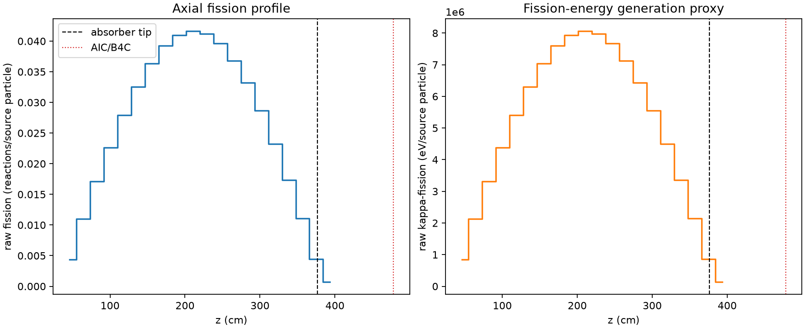
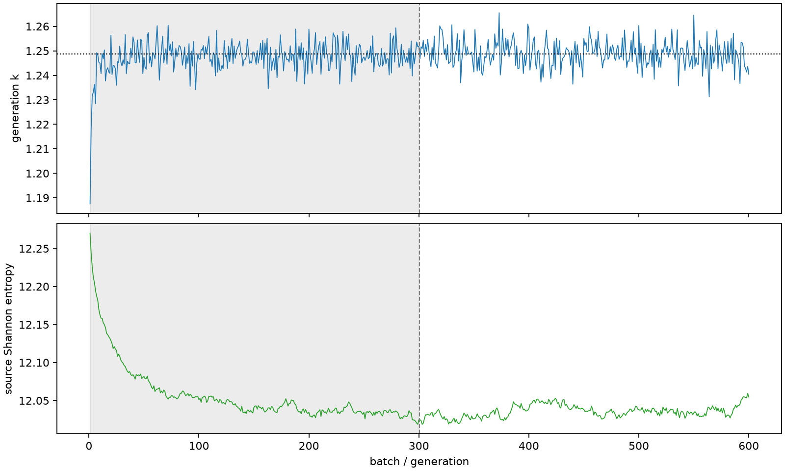

| field | value |
|---|---|
| experiment | V2-STAGE_128_OGRENCI_03-0017 |
| k | 1.2486746588096858 |
| MC standard error | 0.0001908710492901222 |
| seconds | 1016.5649108390062 |
| acceptance | not_assessed |
| convergence | review_required |
Completed is output integrity only; physical and statistical review required. Zero tallies do not prove zero production or zero uncertainty.
| diagnostic | value |
|---|---|
| geometric fuel voxels | 5280 |
| zero fission tally voxels | 0 |
| low signal fuel voxels | 0 |
| low signal fission share | 0.0 |
| low signal kappa share | 0.0 |
| important fission share | 0.9500649439150713 |
| previous filter included | 5280 |
| duration estimate s | 1562.5173488400023 |
| actual minus estimate s | -545.9524380009962 |
| fission relative MC error | statistics |
|---|---|
| all_geometric_fuel | {"voxels": 5280, "positive_mean_voxels": 5280, "zero_mean_voxels": 0, "undefined_relative_error_voxels": 0, "median": 0.009855434302317506, "p95": 0.03130596970862288, "maximum": 0.07538854527778542} |
| low_signal | {"voxels": 0, "positive_mean_voxels": 0, "zero_mean_voxels": 0, "undefined_relative_error_voxels": 0, "median": null, "p95": null, "maximum": null} |
| important_95pct | {"voxels": 4101, "positive_mean_voxels": 4101, "zero_mean_voxels": 0, "undefined_relative_error_voxels": 0, "median": 0.009109169302819946, "p95": 0.01369602149660553, "maximum": 0.016809337617062693} |
| outside_previous_filter | {"voxels": 0, "positive_mean_voxels": 0, "zero_mean_voxels": 0, "undefined_relative_error_voxels": 0, "median": null, "p95": null, "maximum": null} |
| kappa_fission relative MC error | statistics |
|---|---|
| all_geometric_fuel | {"voxels": 5280, "positive_mean_voxels": 5280, "zero_mean_voxels": 0, "undefined_relative_error_voxels": 0, "median": 0.009845332356237869, "p95": 0.03127289737341751, "maximum": 0.07524481178469317} |
| low_signal | {"voxels": 0, "positive_mean_voxels": 0, "zero_mean_voxels": 0, "undefined_relative_error_voxels": 0, "median": null, "p95": null, "maximum": null} |
| important_95pct | {"voxels": 4101, "positive_mean_voxels": 4101, "zero_mean_voxels": 0, "undefined_relative_error_voxels": 0, "median": 0.009098937741965645, "p95": 0.013682052826788135, "maximum": 0.016792407920561706} |
| outside_previous_filter | {"voxels": 0, "positive_mean_voxels": 0, "zero_mean_voxels": 0, "undefined_relative_error_voxels": 0, "median": null, "p95": null, "maximum": null} |
| axial bin | fission share | kappa-fission share |
|---|---|---|
| 1 | 0.008503241698014046 | 0.008503729201782141 |
| 2 | 0.021603954798272082 | 0.02160397192126099 |
| 3 | 0.033603067848749946 | 0.03360294522376104 |
| 4 | 0.04436521222713556 | 0.04436524863890815 |
| 5 | 0.05469763737646044 | 0.054697526072335814 |
| 6 | 0.0638099781931217 | 0.0638098567940153 |
| 7 | 0.07126328560732405 | 0.07126311602482743 |
| 8 | 0.07702532151643 | 0.07702515897916909 |
| 9 | 0.08029334144502158 | 0.08029339077999807 |
| 10 | 0.08158573856881703 | 0.08158574765062582 |
| 11 | 0.08076791023029445 | 0.08076763656886687 |
| 12 | 0.07773391611777483 | 0.0777335077354779 |
| 13 | 0.07210965520191874 | 0.0721094949948643 |
| 14 | 0.06510197344456829 | 0.06510182755575085 |
| 15 | 0.056197874770424774 | 0.05619769813520478 |
| 16 | 0.04550312544852802 | 0.04550312059184957 |
| 17 | 0.03396638818179854 | 0.033966379904100716 |
| 18 | 0.021742005372621193 | 0.02174202434624844 |
| 19 | 0.008717806796154078 | 0.008718478810757262 |
| 20 | 0.0014085651565706493 | 0.0014091400701953748 |
Histories include the inactive-to-active transition at batch 300. kappa-fission approximates fission energy production, not total heat deposition.

